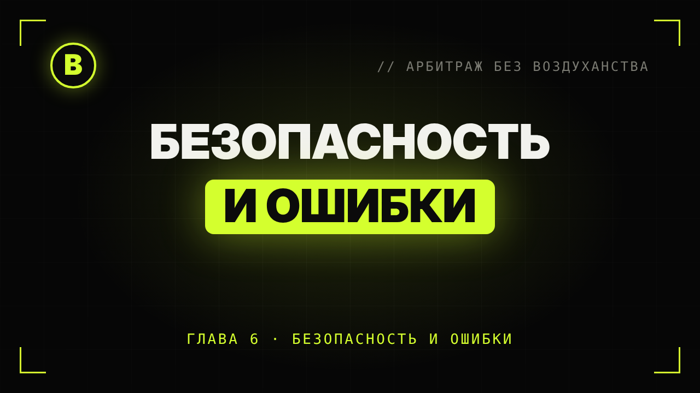
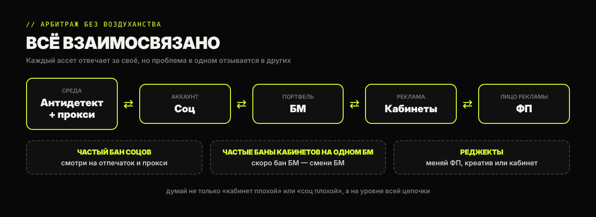
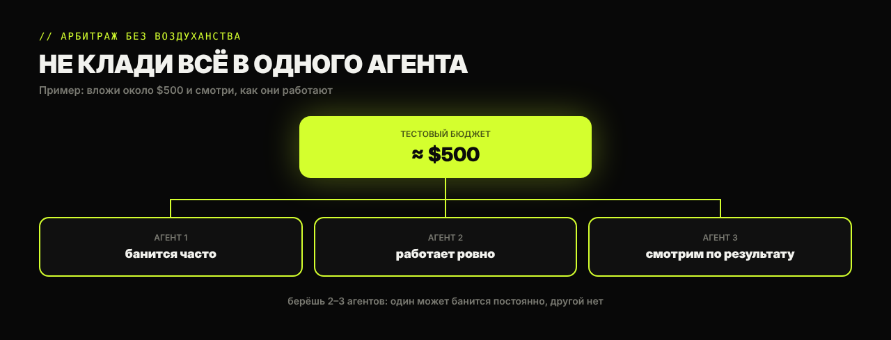

Безопасность и ошибки

Баны
Баны бывают разные: кабинетов, БМ, соцов, ФП и так далее. Все эти вещи взаимосвязаны. Каждый ассет за что-то отвечает и работает в своей среде, и нужно понимать: каждый бан к чему-то приведёт.

Если термины незнакомы
БМ — Business Manager, бизнес-менеджер Facebook, в котором лежат кабинеты. Соц — личный аккаунт, через который идёт работа. ФП — фан-пейдж, страница, от имени которой идёт реклама. Кабинет (РК) — рекламный кабинет, где запускают рекламу. Антидетект — браузер, который создаёт отдельный «отпечаток» для каждого профиля.
| Что происходит | О чём это говорит | Что делать |
|---|---|---|
| Частые баны кабинетов на одном БМ | Скоро может прилететь бан самого БМ | Сменить БМ |
| Частые баны соцов | Facebook считает подозрительным твой отпечаток в антидетекте, или прокси очень фродовый | Проверить отпечаток и прокси |
Прокси можно проверить на сайте scamalytics.com.
Нужно думать не только «кабинет плохой» или «соц плохой». Думай гораздо абстрактнее, на уровне всей цепочки.
Реджекты
Реджекты — одна из самых больших болей баеров. Как показывает практика, каждый находит свой паттерн работы с ними:
- кто-то меняет ФП;
- кто-то пользуется уникализаторами;
- кто-то меняет кабинет (РК);
- а кто-то выкидывает креатив и даже не пытается его дозапустить.
Про перезапуск и апелляцию мы говорили в главе 5.
Безопасность
В основном все используют антидетект-браузеры, причём именно все: кто-то Dolphin, кто-то AdsPower, каждому как удобно.
Прокси всегда проверяй перед запуском профиля, чтобы не забанило соц.
Лучше всего использовать агентов: на них можно делегировать 70–80% проблем с аккаунтами.
Как выбирать агентов
На рынке много хороших агентов. Вложи около $500 и посмотри, как они работают. Не нужно вваливать все деньги сразу в одного агента. Возьми 2–3 агентов для диверсификации: я часто замечал, что один агент банится постоянно, а второй нет.

Ошибки, о которых мы уже говорили
Типичные ошибки новичков разобраны в главе 4:
- сливать бюджет и не разбирать, почему так вышло;
- быть негибким;
- копировать всё со спая.
Новые главы выходят в канале. Подпишись, чтобы не пропустить.
Подписаться на «Воздухан»